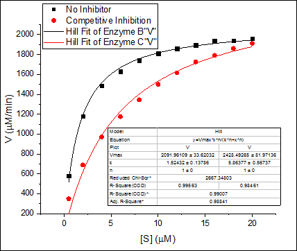

パラメータ共有でのグローバルフィット
サマリー
グローバルフィットは、複数曲線を同時にフィットする際のOriginのフィットモードの1つです。データセットは個別のままなので、フィット処理の際にパラメータ値を共有できますパラメータが共有されると、1つのパラメータ値が計算されて、全データセットに使用され、共有しないとデータセットごとに異なるパラメータ値を計算します。
対照的に、連結フィットは全データセットを一つのデータセットに連結して実行されます。非線形フィットは一つのデータセットに対して実行されますので、パラメーター値の一つのセットのみが戻されます。
Origin2016 SR2から、新しいアプリ Sequential Fit がリリースされ、複数のデータで連続したフィットが行えるようになりました。このアプリでは、現在のデータセットから取得したパラメータ値を次のデータセットでも初期値として利用出来ます。順番に共通パラメータを変化させていく必要のある複数のデータに対して、最適なアプリです。
学習する項目
このチュートリアルでは、以下の項目について解説します
- 複数データセットを選択する
- 異なるフィットモードを選択する
- パラメータを共有してグローバルフィットを実行する
ステップ
- 新規ワークブックボタン
 をクリックします。
をクリックします。
 ボタンをクリックして、<Origin EXE Folder>\Samples\Curve Fitting\フォルダの、Enzyme.datファイルをインポートします。
ボタンをクリックして、<Origin EXE Folder>\Samples\Curve Fitting\フォルダの、Enzyme.datファイルをインポートします。- B、C列を選択して
 ボタンをクリックし、散布図を作図します。
ボタンをクリックし、散布図を作図します。
- グラフウィンドウがアクティブなまま、解析：フィット：非線形曲線フィット...メニューを選択し、NLFit ダイアログを開きます。
- 再計算モードはドロップダウンから自動を選択します。
- 関数選択ページで、Growth/Sigmoidal カテゴリーからHill関数を選択します。
- データ選択ページで、入力データの隣にある三角形のボタンをクリックし、現在のレイヤのすべてのプロットを追加するを選択して、データをセットします。
- 複数データフィットモードのドロップダウンリストからグローバルフィットを選択します。
- パラメータタブに移動し、n と n_2の固定チェックボックスにチェックを付け、それらの値を1にします。
- フィットボタンをクリックして、フィットを実行します。結果シートのパラメータ表でフィット結果を確認できます。
- グラフの元データプロットに、フィット曲線が追加されます。

- この場合、最大の反応速度、 Vmax は同じかもしれません。次に、このパラメータを共有してフィットしてみましょう。
- レポートワークシートにある緑の鍵のアイコンをクリックして、パラメータの変更を選び、NLFitダイアログを再度開きます。
- パラメータタブで、Vmaxの「共有」チェックボックスにチェックを付けます。
- 「フィット」ボタンをクリックし、結果を生成します。両方の曲線のVmax の値が同じであることが分かります。パラメータ名のアスタリスクはこのパラメータが共有されていることを表しています。
- フィット曲線も更新されました。